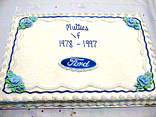
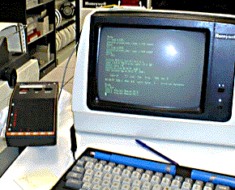

Location
 Ford Motor Company, Engineering Computer Center, Dearborn, Michigan.
Ford Motor Company, Engineering Computer Center, Dearborn, Michigan.
Dates
3Q73 - 1Q75 consignment/trial/development
3Q78 - 2Q97 production
April 25, 1997 final shutdown (Story below)
Configuration
[BWS] At its peak in 1Q91 there were 4 systems, 3 production and 1 a spare provided by Bull to provide tested boards. All were unclassified.
| memory | disk | tape | ||||
|---|---|---|---|---|---|---|
| CPUs | MW | FNPs | GB | strings | printers | |
| System | 8/70M | SCU | DN355 | 3381 | MTU* | PRU1600 |
| A | 6 | 16 | 4 | 23 | a,c,x,y | 2 |
| B | 6 | 16 | 3 | 33 | a,b,x,y | 2 |
| C | 6 | 12 | 2 | 20 | b,c,y | 1 |
| S | 1 | 4 | 1 | - | x | 0 |
| total | 19 | 48 | 10 | 76 | 30 drives | 5 |
The tape strings were shared between systems as shown, and consisted of the following drives: MTU0630: a=7, b=6, c=6, x=7 MTU8200: y=4
The S system shared disk with the C system to run MHAT diagnostics.
The A system ran an X.25 LAPB TCP/IP, and the C system ran a Cray Station over a 50 Mb Hyperchannel.
Each of the production systems had 2 IMUs. IMUs (as contrasted with IOMs) were required to run the FIPS 3381 disk to which we converted in 1988. There were no paging devices, although we had used a bulk store on our GCOS machine. Almost as a point of pride, there were never any card devices (we left card processing behind with GCOS). All of the systems ran MR12.1, to which we upgraded during the disk conversion effort.
Customer management
Bob Heiney, Vince Scarafino, Greg Clark, Bert Moberg, Bruce Sanderson, Greg Baryza, Tom Layher.
Application areas
[BWS] There was one large application (Warranty analysis that eventually occupied most of Multics_B), dozens of medium applications, and scores of small applications.
[Vince Scarafino] We were the first I know of to put a relational database application into production. (We used MRDS.) Management of the commercial data center accused us of being irresponsible, since everyone knew that you couldn't use a relational data base for real production. We were doing in excess of 300,000 transactions in a typical 8 hour day.
Hole Management
[Greg Baryza] Cars of that era had many models and less options. Trucks were the opposite; they had few models and many options. When you sat down to order a big truck, you specified it almost from the ground up: tilt cab or hood over the engine; steel cab or aluminum cab, one or two rear axles, passenger cab or driver-only, what size engine, what size transmission, how many side rails under the bed, what kind of fuel, etc., etc.
[Greg Baryza] The state of the art in the mid-70's as far as truck design was primitive by today's standards. It was sometimes the case that you couldn't figure out whether you could build what the customer wanted until after the order was taken and you'd analyzed the order by computer (read, mainframe).
[Greg Baryza] You see, many options required some kind of a modification to the frame, usually one or more holes had to be cut, drilled, or punched. Sometime, you found that the cable needed for this option required a hole right where the extra capacity fuel tank went. So it was very important to keep track of what went where.
[Greg Baryza] Jim's project went beyond that to help truck designers keep track of holes "in various stages of development". There were obsolete holes for options Ford no longer sold, current holes for options they did sell, pre-production holes for options they were going to sell, and design holes for options there were trying to decide whether to sell. It was an interesting, real-world database problem, once you got by the jokes about writing an application to keep track of "nothing".
Salesman
Bernie Licata, Karen Elizabeth Bush
Site Analysts
Terry Bozich, Fred Burford, Frank Tofil, Fred Zemmin.
Field Engineers
Jim Tessmer, Rick Strome, Ray Boone, Bruce Cann, Don Chessor, Walt Cole, Tom Harris.
System Administrators
John Cameron, Lenora Sobeck.
Final Shutdown
C: 1991-10-26
B: 1992-12-12
A+S: 1997-04-25
Anecdotes
[BWS] This is far from a comprehensive history of the Ford site, but I thought I'd mention that Ford had Multics twice. In 1973-1975 Multics arrived on a trial basis that included a certain amount of joint OS development. The Ford systems group had a fair knowledge of operating systems, having originally supported the Ford Philco 212 OS, and welcomed the chance to contribute to this interesting new system called Multics. To this day the following software products are licensed from Bull at no charge to Ford because of the joint development effort on MR3:
- AGS6802 ISTAT
- SGC6800 Multics Comm System
- SGC6803 Bisync support, MCS
- SGC6804 G115 support, MCS
- SGE6800 Multics Software Extensions
- SGE6802 RJE facility
- SGL6801 Fortran-77
- SGL6802 Basic
- SGS6800 Multics Exec
- SGS6801 GCOS TSS Environment
Alas, Multics fell victim to economic and experimental woes. Because it was an experimental/evaluation system users were reluctant to write applications for it. Because there were no applications for it, when the economy dipped and money got tight there was no justification for keeping it.
[BWS] It came back in sunnier economic times several years later. In 1978 applications were written on System-M, then moved to Ford's own Multics system when it arrived later that year. By this time MR6.5 was available and Multics was a more robust product. The next year Multics was moved by upgrading from Level 68s to 8/70Ms into its new home in the Engineering Computer Center. It grew into three systems, with capacity and usage peaking around 1989. The last major upgrade was to convert from 501 to 3381 model disks, convert IOMs to IMUs, and upgrade to MR12.1 in 1988.
[BWS] Most of the Multics applications were migrated to Sequent systems, and in 1995 only one Multics system (two applications) remained.
[Greg Baryza], from a 1993 posting to alt.os.multics Ford, you see, bought Multics twice. Not two systems. We bought it, evaluated it, and sent it back as being insufficient for our purposes. Several years later, when Multics had evolved better commercial facilities, we bought it a second time.
[Greg Baryza] I'll need some help on dates here... Perhaps Vince can dig into old dirs and find some of the MJDM's (Multics Joint Development Memos).
[Greg Baryza] Ford had been running a large GCOS installation for years, and was looking to replace it with something better. So we worked a deal with Honeywell to do an eighteen-month evaluation of the system. This was around 1974. We actually picked out a few projects to try: Roger Morenc did some work with Paul Kyzivat on automatic tuning of the system; Jim Silverman worked on a project to keep track of holes in truck bodies (above); I worked on a database project using some software developed at RADC.
[Greg Baryza] After about two years, our conclusions were that the system was great for all the reasons people have pointed out: consistency of purpose, clarity, generality, unified approach, and so on. Unfortunately, it as lousy as far as offering services our customers had on our GCOS system. There was no COBOL compiler, no database management system, system backups were cumbersome, the FORTRAN compiler produced worse code than GCOS, there was no screen-forms interface. There were others.
[Greg Baryza] So we sent it back. But we had been bitten and the virus was spreading. Gradually, our GCOS system evolved at our own hands and we tried to be Multics-like whenever we could, infecting others unconsciously.
[Greg Baryza] Fortunately too, the Multics folks listened. There came a COBOL compiler, MRDS, and a very enlightening collaboration with Richard Barnes, Bob Mullen, and Paul Green over the speed of the generated code from Multics FORTRAN. Multics showed up again in the late 70's at Ford and it's remained to this day. Ford made the same "mistake" twice and I count myself lucky to have been part of both events.
MRDS
[Brian Henk] An IMS programmer/DBA designed a MRDS database. One of the reports required a 30 table join - it worked, it may still be working.
[Brian Henk] Another IMS person (a contractor) wrote a MRDS delete program and attempted to delete all the records where (...). "The first delete took 15 minutes, the remaining deletes went very fast." The contractor failed to realize the first delete removed all the tuples the remaining deletes did nothing. So much for set theory. Multics humor - how many dsl_$deletes does it take to delete a tuple?
Shutdown of the Ford System
Ford's last Multics active system, Multics_A, was decommissioned Friday April 25, 1997, at 3:00pm EDT. It's the end of an era for us, and the machine will be missed. There was a gathering of current and past Multicians who worked with the Ford systems in the Engineering Computer Center building (Dearborn, MI) to mark the occasion. Bob Heiney (retired) returned for the occasion to play "Taps" on his horn.
Here's how the hardware was positioned for the final Multics configuration. We were running 3 processors and three banks of memory.

We had a 'wake' for Multics, including a cake to help say goodbye. I thought the f was a nice touch...

Here's a picture of the main console after the shut command was entered. If you look close, you can see that two of the three processors have been taken offline.
More pictures of people at the wake.